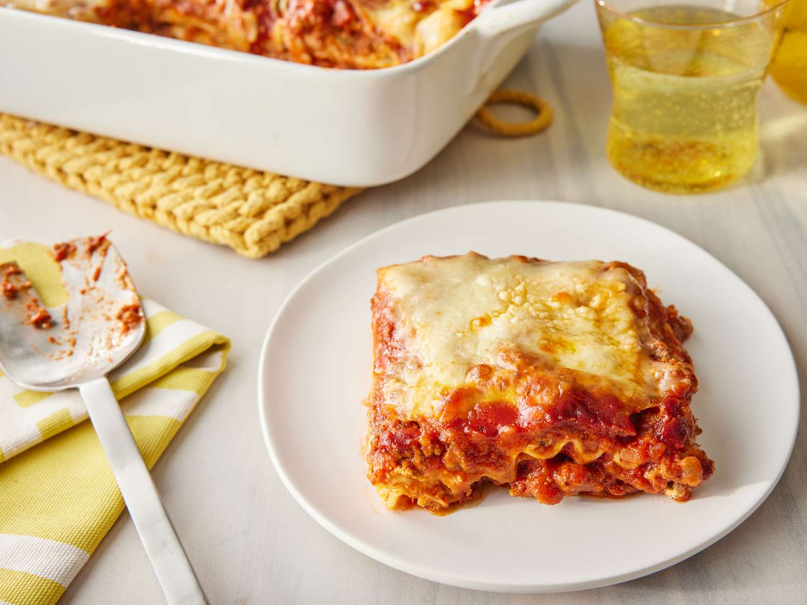

Lasagna Recipe
posted by Lucas Antunes

Description
This lasagna recipe takes a little work, but it is so satisfying and filling that it's worth it!
Ingredients
- Meat
- Onion and Garlic
- Tomato products
- Sugar
- Spices and seasonings
- Lasagna noodles
- Cheeses
- Egg
Steps
- Make the meat sauce
- Cook the noodles
- Make the ricotta mixture
- Layer the lasagna according to the recipe instructions
- Cover with foil and bake
- Let the lasagna rest before serving
Click here to comeback to the homepage, and see other recipes!